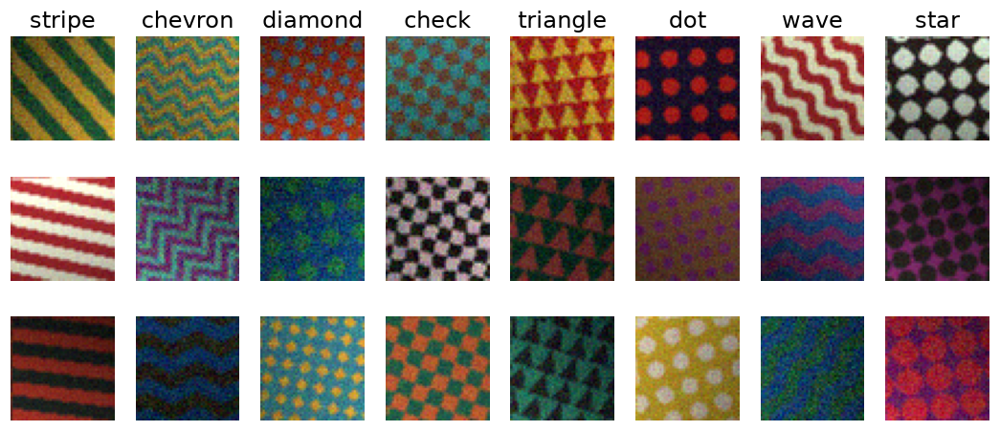

SDAIA Academy · Deep Learning and Generative AI Fundamentals
Vision and transfer
Day 2: Why convolutions suit images, and how a pretrained model turns 800 labels into a working classifier
AI Engineering Track4 teaching days + capstone day4 sessions · 4 labsAE-202
Today
Vision and transfer
Session 1 · Convolutions and what they detectA convolution as one small detector slid over the image, pooling, and what the first layer learns
Session 2 · Pretrained backbonesWhat a network trained on a large image set already knows, and how to use it as a fixed feature extractor
Session 3 · Fine-tuning with little dataWhich layers to unfreeze, at which learning rate, and how augmentation stands in for data you do not have
Session 4 · Evaluating a deep modelBeyond one accuracy number: the confusion matrix, the confident errors and a test set that leaks
Review · Day 1
A flat curve, one more time
A new script trains an eight-class classifier. The loss stays at 2.08 for ten epochs. On 16 examples alone, with the same loss and learning rate, the loss also stays near 2.0 after 300 steps. What do you do next?
Tag the rows and test the data pipeline
Check the loss on a perfect prediction, then sweep the learning rate on the one batch
Collect more labelled examples and train again
Add dropout and weight decay to stabilise the training
Why. A failed one-batch test points at the loss or the update. Both have a cheap check with a known answer.
Session 1
Convolutions and what they detect
Compute a convolution on a small image by hand
Count the weights of a convolutional and a fully connected layer
Read first-layer filters and feature maps
01
Today's data
The catalogue photographs are turned, shifted and in colour

8,000 synthetic photographs, 48 by 48 pixels: 6,000 to train, 1,000 to validate, 1,000 to test. Colour says nothing about the class.
Yesterday's network on today's data
One weight per pixel position cannot learn a pattern that moves
0.15
validation accuracy of a two-layer network with 885,896 weights on the photographs (Lab 2.1). Chance is 0.125; on straight swatches it reached 0.79
A fully connected layer learns "bright at row 3, column 7"
Shift a stripe by three pixels and every one of those weights is wrong
It would need to see each pattern at every position and angle
Convolution
A convolution slides one small detector over the whole image
A kernel is a small grid of weights: 3 by 3, 5 by 5
At each position: multiply kernel and pixels under it, add up
The result is a feature map: where in the image the kernel's pattern occurs
The same weights at every position: a stripe is a stripe wherever it lies
edge = torch.tensor([[-1., 0., 1.],
[-1., 0., 1.],
[-1., 0., 1.]])
out[i, j] = (img[i:i+3, j:j+3] * edge).sum()
# 48 x 48 in, 46 x 46 out
Why it is small
Sharing weights across positions cuts the first layer 700 times
Fully connected, 6,912 inputs to 128 units884,864
Convolution, 16 kernels of 5 by 5 by 31,216
Whole network of Lab 2.1: three convolution blocks and a head, 25,096 weights
Fewer weights to fit, and each one sees every position of every image
The rest of the network
Pooling shrinks the map; depth widens what a unit sees
Conv 5×5, 16edges and bars, 48 × 48
→
Pool, conv 3×3, 32corners and crossings, 24 × 24
→
Pool, conv 3×3, 64motifs, 12 × 12
→
Average, linear64 numbers, then 8 scores
Max pooling keeps the largest value of each 2 by 2 block: half the size, less sensitive to a small shift
After two poolings, one unit of the third layer looks at a 20-pixel patch of the photograph
The final average over all positions asks "does this motif occur?", not "where?"
The last map and the head
Average or flatten: count the layer that follows
Map 32 × 6 × 6, 8 classes
Inputs
Head weights
Average, then linear
32
264
Flatten, then linear
1,152
9,224
Count it. Flatten: inputs = channels × height × width. Average: inputs = channels. Flattened, the head holds 66% of the network's weights (5% averaged) and accepts one image size only: on a 32 × 32 swatch it fails.
What the lab measured
35 times fewer weights, and it learns the photographs
Network, 6,000 training photographs
Weights
Validation accuracy
Two layers, fully connected, 5 epochs
885,896
0.15
Convolutional, supplied checkpoint (8 epochs)
25,096
0.71
Convolutional, 2 more epochs in the lab
25,096
0.86
What the first layer learnt
Nobody designed these filters; they are what lowered the loss
The 16 first-layer filters of the supplied checkpoint, each rescaled to its own range.
Bars and edges at different angles
Colour contrasts: one yarn against another
Deeper layers combine them; those are too abstract to draw as pictures
Checkpoint
What does the convolution buy?
Shaima photographs the same striped rug twice; in the second photograph the rug sits four pixels to the right. Which statement about the first layer of each network is right?
Both layers give the same output for the two photographs
The convolution gives the same feature map for the two photographs
The convolution needs both photographs in training to recognise the second
The convolution's feature map shifts by four pixels; its values stay the same
Why. The same kernel is applied everywhere, so a shifted input gives a shifted map. Pooling and the final average then make the result insensitive to where.
Lab 2.1 · 25 min
A small convolutional network
Train a small convolutional network on the catalogue photographs from a supplied checkpoint and visualise its first-layer filters.
✱ Stretch: Shift every test image by four pixels and compare the two networks; then count the last layer with the map flattened instead of averaged
Session 2
Pretrained backbones
Remove the head of a pretrained network and extract features
Prepare images the way the backbone was trained
Train a linear classifier on frozen features
02
The real constraint
The cooperative has 800 labelled photographs, not 6,000
Labels cost an expert's time: Shaima named 100 photographs per pattern
The network of this morning, trained from scratch on those 800 for 20 epochs: 0.48 on the test set
0.48
test accuracy, small network from scratch on 800 photographs (supplied run, 60 seconds)
This is the baseline of the day. Every result this afternoon is read against it, on the same 1,000 test photographs.
Pretrained backbones
Someone has already trained the filters on a million photographs
A backbone is a network trained on a large, general image set, published as a file of weights
Early layers: edges, colours. Middle: textures, repeated shapes. Last layer: that set's own classes
The early and middle layers transfer: every image task needs them
In the lab: ResNet-18
11.7 million weights, 11.2 million without its 1,000-class head, trained on ImageNet-1k (1.28 million photographs, 1,000 everyday classes). A 45 MB download, loaded with one line (torchvision; the same weights are in timm).
Feature extraction
Remove the last layer and the network returns 512 features
m = torchvision.models.resnet18(
weights="IMAGENET1K_V1")
m.fc = nn.Identity() # was 512 -> 1000
m.eval()
with torch.no_grad():
features = m(prepare(X)) # (N, 512)
The 1,000-class layer is the only part about ImageNet's classes
Everything before it becomes a fixed function: photograph in, 512 numbers out
Frozen: evaluation mode, no gradients, nothing trained
Preprocessing
Feed a backbone what it was trained on
Normalise each colour channel with the mean and standard deviation of the backbone's training set
Resize towards the size it was trained at: its filters expect motifs of a certain size in pixels
These numbers belong to the weights; they are published with them
What goes wrong. Raw pixels in [0, 1] fed to a backbone raise no error. The features are just worse, by a little or by a lot. It is the quiet kind of fault from yesterday's list.
The classifier
One linear layer on frozen features is the cheapest transfer
Extract features once; they are a table of numbers now
Standardise with statistics of the training features
Train Linear(512, 8): 4,104 weights, seconds
Nothing in the backbone can overfit, because nothing in it moves
From scratch, 800 photographs0.48
Frozen features + linear layer0.77
One label or several
A rug with stripes and stars needs a yes or no for each motif
Motif
Score, set by hand
Softmax
Sigmoid
stripe
2.4
0.55
0.92
star
2.0
0.37
0.88
wave
−0.4
0.03
0.40
check
−0.8
0.02
0.31
four others
−2.6 to −1.5
0.01 or less
0.07 to 0.18
Sum
1.00
3.01
Mariam wants every piece listed under each motif it carries
Softmax makes the motifs compete for one unit of probability: only stripe passes 0.5
A sigmoid per motif answers eight separate questions: stripe and star both pass
The head for several labels
Independent sigmoids with binary cross-entropy
head = nn.Linear(512, 8) # the same layer
Y = torch.tensor(tags).float() # (N, 8) of 0 and 1
loss = F.binary_cross_entropy_with_logits(
head(f), Y)
chosen = torch.sigmoid(head(f)) > 0.5
Each example has
Output
Loss
Exactly one class
softmax
cross-entropy on class numbers
Any number of labels, zero included
a sigmoid per label
binary cross-entropy on a 0/1 table
What goes wrong. A softmax head with a 0.5 cut runs without an error, and two motifs can never both pass it.
Provenance
A backbone carries the terms of the data it was trained on
The code and the weights file
torchvision is under a BSD 3-clause licence, and the model card of these ResNet-18 weights states the same licence.
The training data
ImageNet's terms of access allow non-commercial research and educational use. Whether weights trained on it may be used in a shop is a question for Bushra Al-Aqeel, not for the engineer alone.
The habit for the capstone. For every model and dataset: its licence, where it came from, and who checked. Day 4 turns this into a column of the model-choice table.
Checkpoint
Which statistics?
Zaid extracts features for 800 training and 1,000 test photographs. Before the linear layer he standardises them. Which mean and standard deviation does he use for the test features?
Those of the 800 training features
Those of the 1,000 test features
The ImageNet mean and standard deviation of the backbone
Those of all 1,800 features together
Why. Everything fitted, including a mean, is fitted on training data and then applied unchanged to new data.
Lab 2.2 · 25 min
Frozen features
Extract features from the 800 labelled images with a pretrained image model and train a linear classifier on them.
Resize and normalise as the backbone expects 4 min
Extract features without gradients 7 min
A linear classifier on the features 6 min
Against training from scratch on the same 800 4 min
✱ Stretch: Take the features one block earlier and compare
Session 3
Fine-tuning with little data
Freeze and unfreeze chosen blocks of a network
Apply augmentation that keeps the label true
Compare frozen features, partial fine-tuning and training from scratch on one test set
03
The choice
Three ways to use 800 labels, from least to most trained
Frozen features
Train only a new head. Seconds. Cannot damage the backbone, cannot adapt it either.
Partial fine-tuning
Also train the last block or two. The most task-specific layers adapt; the general ones stay.
Full fine-tuning
Train everything at a small rate. The most capacity to adapt, and to overfit little data.
Rule of thumb. The less data you have and the closer your images are to the backbone's, the more you freeze. Then measure: the rule is a starting point.
Freezing
A frozen weight has no gradient and is never updated
m.fc = nn.Linear(512, 8)
for p in m.parameters():
p.requires_grad = Falsefor p in m.layer4.parameters():
p.requires_grad = Truefor p in m.fc.parameters():
p.requires_grad = True
75%
of ResNet-18's weights, without the head, sit in its last block: 8.4 of 11.2 million (Lab 2.3)
"Only the last block" is still 8 million numbers fitted to 800 photographs.
Learning rates
Small steps for what is already good, larger steps for what is new
The pretrained block starts from useful weights: it is nudged
The new head starts from random numbers: it must travel
One large rate for both destroys the block in the first steps
Augmentation
Augmentation is extra data that costs no labels, if it keeps the label true
Safe for these patterns
Flips, small shifts, a rotation, a change of colours: a flipped chevron is a chevron, and the class does not depend on colour.
Not safe everywhere
Flip a photograph of text or of a left-hand glove and the label is wrong. A heavy blur can turn a wave into a stripe.
Applied to each batch in training only, with new random choices every time
The validation and test photographs are never augmented
What the lab measured
Transfer bought 30 points; fine-tuning added one more
800 labelled photographs, same 1,000 test photographs
Test accuracy
Weights trained
Seconds
Small network from scratch
0.476
25,096
60
Frozen features + linear layer
0.774
4,104
24
Last block fine-tuned, with augmentation
0.788
8,397,832
102
Read all three columns. The last row is the best by 1.4 points, for four times the training time and 2,000 times the trained weights. On 1,000 test photographs, 1.4 points is 14 photographs.
Beyond this table
Fine-tuning pays more when the new images differ more
Close to the backbone's data, little data: frozen features are hard to beat
Far from it (medical scans, satellite images, microscope slides), more data: unfreeze more
Always keep the frozen-feature result as the row to beat: it costs seconds
A time budget is part of the task: this outcome says "a laptop CPU time budget"
Going further. Detection, segmentation, export and field tests of vision models are the subject of AE-309 Computer Vision Engineering.
Checkpoint
What went wrong in the first epoch?
Rayan unfreezes the last block of a pretrained backbone and trains it together with a new head, one Adam optimiser at a learning rate of 0.01 for everything. After one epoch the validation accuracy is below what frozen features gave. What is the most likely cause?
The augmentation made the training images too different
Too few of the backbone's layers were left frozen
The large steps overwrote the pretrained weights of the block
The new head had too few weights to use the features
Why. Pretrained weights are a good starting point that a large learning rate destroys. Use a small rate for the block and a larger one for the head.
Lab 2.3 · 25 min
Fine-tune the last block
Fine-tune the last block with augmentation on 800 images and compare with the supplied frozen-feature and from-scratch results.
✱ Stretch: Unfreeze one more block and measure the cost in time
Session 4
Evaluating a deep model
Read a confusion matrix by class
Inspect the most confident errors and sort them by cause
Find near-duplicates between training and test images and report accuracy without them
04
Evaluation
"0.79" answers none of Mariam's next three questions
Which patterns?
Is it 0.79 on every class, or perfect on six and guessing on two? The confusion matrix.
What kind of errors?
Hard photographs, a systematic confusion, or labels that are wrong? The confident errors.
Can I trust the test?
Has the model seen some test photographs before? The duplicate check.
The confusion matrix
Two pairs of classes hold most of the errors
Labelled as
Photographs
Right
Most often mistaken for
chevron
127
0.50
wave (62 times)
dot
143
0.69
diamond (30 times)
diamond
138
0.78
dot (18 times)
wave
123
0.86
chevron (15 times)
check
118
0.97
star (2 times)
Read the direction. Chevrons are called waves four times as often as waves are called chevrons: at 48 pixels a zigzag's corners blur into curves, and the model's default between the two is "wave".
Confident errors
Five of the ten most confident errors were wrong labels
Sort the wrong predictions by the model's confidence
Look at the top ten, one by one
Either the model learnt something wrong, or the label is wrong
The test set held 12 wrong labels; the model disagreed with 11 of them
Near-duplicates
The same photograph in training and in test is not a test
Top: test. Bottom: its nearest training photograph. Four re-uploads, then two honest look-alikes.
Makers upload a photograph twice; a random split puts one copy on each side
Fingerprint every image, compare test against training
Sorted similarities: 0.999, 0.998, 0.997, then a drop to 0.972
40 test photographs above 0.985
What to report
Report the accuracy without the photographs the model had seen
0.788
all 1,000 test photographs
1.000
the 40 near-duplicates
0.779
the other 960: the number to report
Here it moved the number by one point. In a set where a quarter of the test images have a twin in training, the same check changes the decision. You do not know which case you are in until you look.
The habits
What stands behind a number in your capstone README
The test set, its size, and how it was kept apart
The result of a simpler alternative on the same test set
The confusion matrix, and the two worst pairs in words
The confident errors you looked at, and what they were
The duplicate check, and the number without duplicates
Checkpoint
What do you do with this error?
On a test photograph labelled "diamond" the model says "check" with a confidence of 0.999. You look at the photograph: it shows a checked cloth. What is the right next step?
Add the photograph to the training set with its label and fine-tune again
Send it to the owner of the labels and count such cases
Delete the photograph from the test set and report the new accuracy
Lower the model's confidence with a threshold so that it abstains here
Why. A confident "error" against a wrong label is a finding about the data. The person who owns the labels corrects it, and the correction is recorded.
Lab 2.4 · 25 min
Errors and near-duplicates
Build a confusion matrix for the fine-tuned model, inspect its ten most confident errors and check the splits for near-duplicates.